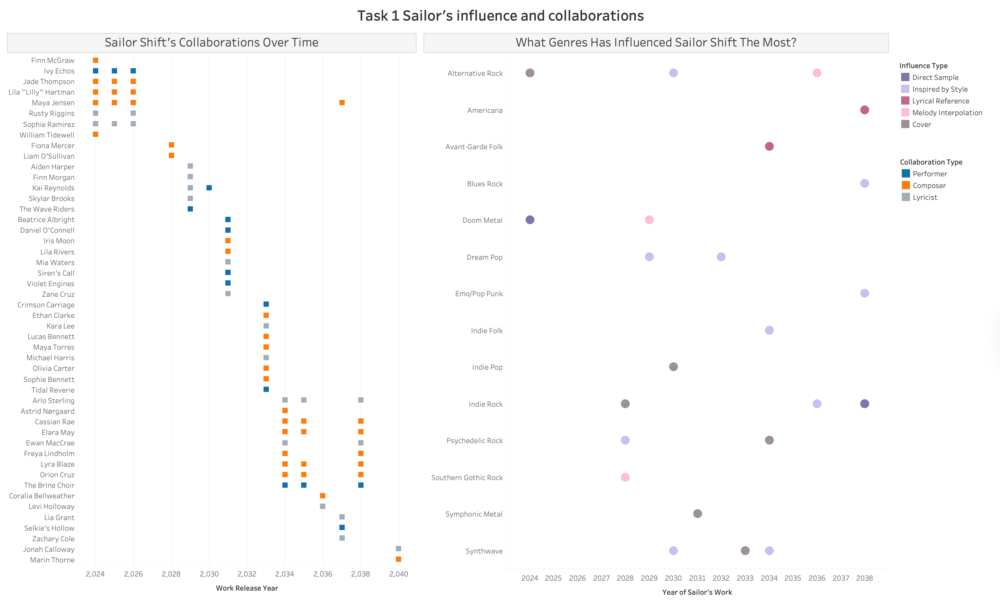
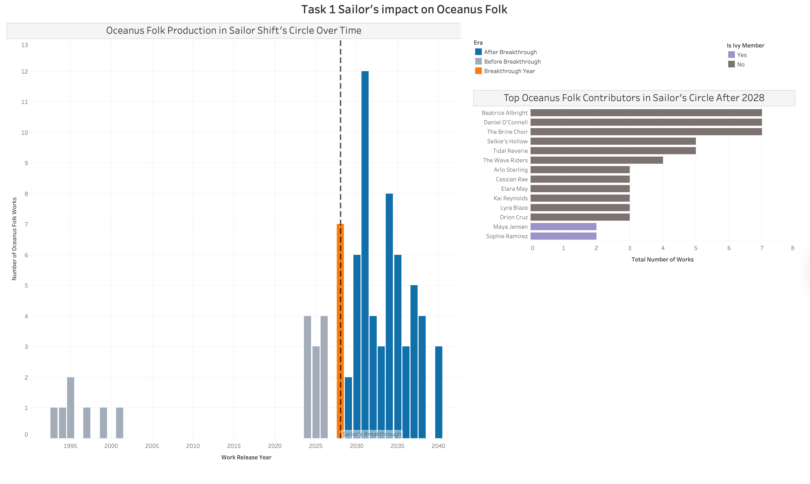

Task 1 — Sailor Shift Career Profile
See Methodology for data preparation details.

Sub-question 1: Who has she been most influenced by over time?
The bottom-left chart of the dashboard above maps Sailor Shift’s sources of inspiration across time. Each dot represents an influence relationship between one of Sailor’s works (X-axis = release year) and its source of inspiration (Y-axis = musical genre). The color indicates the type of influence.
Sailor Shift’s inspiration comes from a large sample of musical genres, 14 of them, ranging from Doom Metal to Synthwave and Indie Folk. From 2028, the year of her global breakthrough, influences diversified and intensified significantly. The dominant influence type is her getting inspired by the style of many genres, suggesting Sailor consistently reinterprets frameworks rather than copying existing works.
Undocumented inspirations are not reflected, which may underrepresent Sailor’s musical influences.
The dataset does not directly link her works to specific artists as sources of inspiration, only to songs, albums, and musical groups.
While it is possible to trace the performers and composers behind those works, this yields 87 largely anonymous individuals with no clear way to identify the most influential artists. As a result, this visualization answers ‘what genres’ influenced Sailor rather than ‘who specifically’ influenced her.
Sub-question 2: Who has she collaborated with and directly or indirectly influenced?
Collaborations
The top chart of the dashboard above shows all her collaborations with other artists across her career timeline and the type of collaboration. Each row represents a collaborator, each square the year of the collaboration, and the colors distinguish the different types. Multiple squares on the same line indicate a recurring collaboration.
From 2024 to 2026, her circle is tight and centered around Ivy Echoes members (Maya Jensen, Jade Thompson, Lila “Lilly” Hartman, and Sophie Ramirez), reflecting her early band period. The band then broke up, and she had a solo breakthrough year in 2028. From now on, an entirely new wave of collaborators emerges, growing and changing through the years. This suggests that Sailor’s rise attracted a more diverse network of collaborators, transitioning her from a band artist to a cooperative one.
The dataset only captures formal creative credits (composer, lyricist, performer), limiting the non-formal reality of collaborations across the music environment.
Influence
The bottom-right chart of the dashboard above identifies who Sailor has influenced. Each bar represents someone who referenced Sailor’s work, and the color distinguishes between direct influence (the entity referenced Sailor herself or her work) and indirect influence (the entity referenced Ivy Echoes or Sailor’s collaborators). The X-axis represents the number of times that each artist was linked to Sailor (documented).
Sailor Shift’s influence reaches 27 distinct entities from a wide range of genres including Oceanus Folk, Indie Rock, Jazz, and Surf Rock. The first four entities show both direct and indirect influences, suggesting that they are the most involved in Sailor’s artistic circle. The vast majority were influenced indirectly, highlighting that Sailor’s impact on the music world propagates mainly through her collaborative network rather than through direct artistic borrowing.
The scale of influence is limited to what is formally documented, many other artists around the world could have been influenced by her without expressing it directly.
Interactive Network Graphs
Click any node to highlight its neighbourhood. Hover over nodes for labels and relationship details.
Click any node to highlight its neighbourhood. Hover over nodes for labels and relationship details.
Sub-question 3: How has she influenced collaborators of the broader Oceanus Folk community?

Left chart — Oceanus Folk Production Over Time
This chart tracks the volume of Oceanus Folk work produced annually within Sailor Shift’s circle. The vertical line marks 2028, the year of her breakthrough, and the colors distinguish three eras: before breakthrough, breakthrough year, and after breakthrough. Each bar represents the number of distinct Oceanus Folk works released each year.
The data tells a story of exponential growth. Before 2028, Oceanus Folk production was small and irregular, rarely exceeding 2 works per year. During the breakthrough year, production immediately jumps to 7 works, nearly doubling the previous year’s result. Post-2028, the number of works went up and peaked at 12 works in 2030, consistently remaining between 3 and 8 works per year. This pattern suggests that Sailor’s rise made her collaborators produce more Oceanus Folk music, creating a renaissance of the genre.
The broader Oceanus Folk community outside her immediate circle is not included, meaning that the full impact is likely to be greater than what is shown here.
Right chart — Top Contributors After 2028
This visualization complements the first one by ranking all Sailor’s related artists who produced 3 or more Oceanus Folk works after her breakthrough. Each bar represents an artist, and its length shows the total number of works they produced. The color distinguishes Ivy Echoes members from the other collaborators. Only the artists with at least 3 works are shown on the graph, unless they are Ivy members.
We can see that her former bandmates are among the least productive contributors, with only 2 works each. In contrast, new collaborators such as Beatrice Albright, Daniel O’Connell, and The Brine Choir lead the chart with 7 works each. This suggests that her influence on the Oceanus Folk community operated by attracting new artists rather than reactivating her original bandmates. The chart indicates that Sailor’s breakthrough created a wave of Oceanus Folk creativity beyond her founding circle.
The true community-wide impact is likely larger than what is shown since the visualization only includes artists directly connected to Sailor through some collaboration.